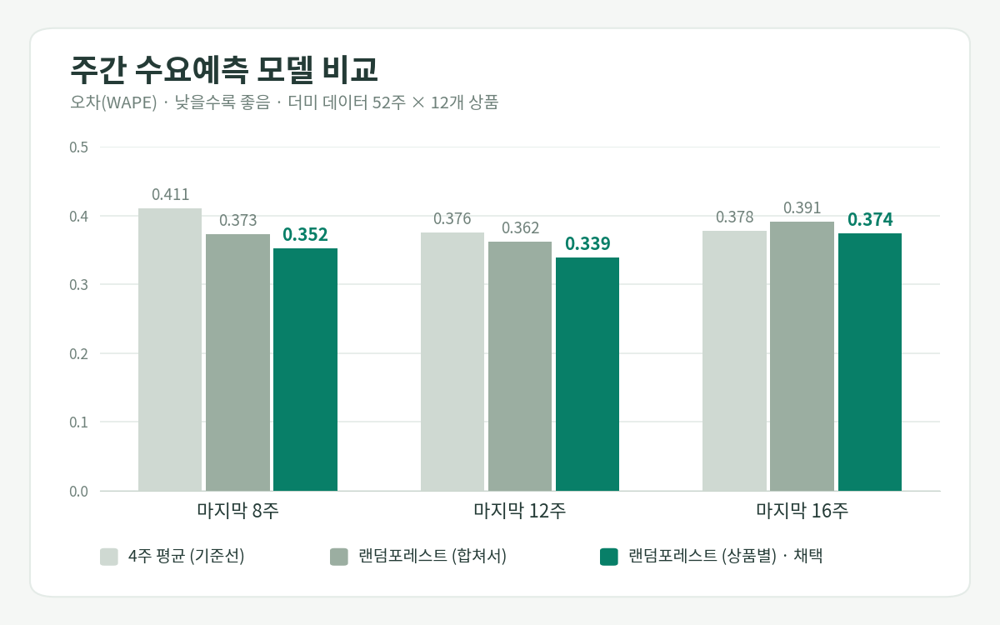
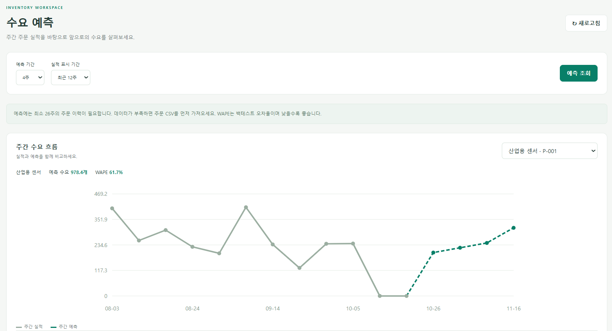
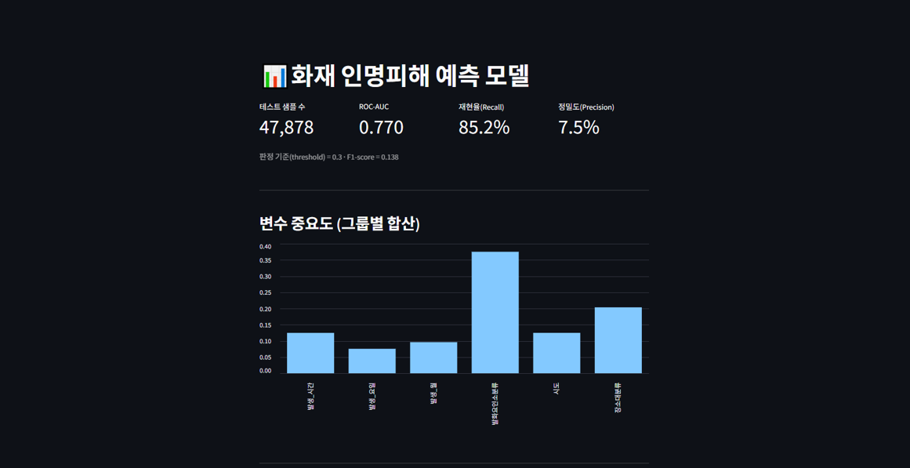
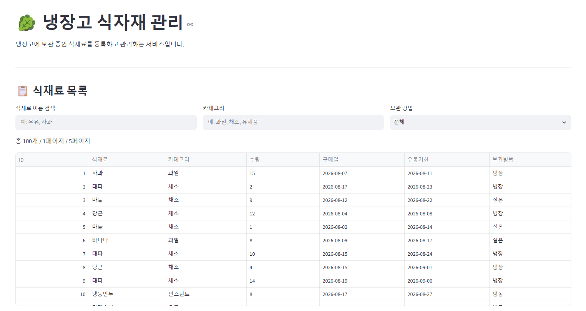
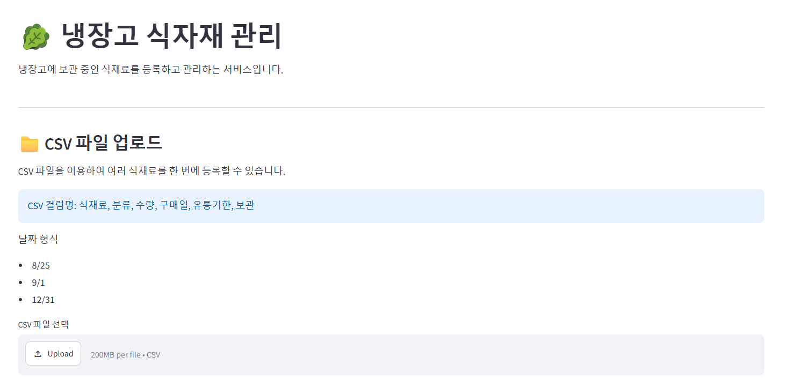

Data Backend · Python / FastAPI
데이터를 정리하고,
API로 연결합니다.
Python으로 데이터를 정리하고 FastAPI와 PostgreSQL로 API를 만들고 있습니다. 팀 프로젝트에서는 백엔드 구현과 모델 검증을 주로 맡았습니다.
PROJECTS
대표 프로젝트
팀 프로젝트에서 제가 직접 맡은 작업을 정리했습니다.


01 · BACKEND + ML
B2B 재고·매출·거래처 관리 API ↗
기업의 상품·거래처·주문·재고를 관리하는 FastAPI 기반 B2B API로, 주문 CSV 일괄 적재, 상품별 주간 수요예측, 그리고 그 예측을 활용한 추천 발주량·예상 품절일 계산 기능을 갖춘 팀 프로젝트입니다.
- 문제과거 거래 데이터를 한 번에 적재할 방법이 없었고, 주문이 드문 상품은 예측 오차가 판매량 수준으로 커짐
- 기여CSV 일괄 적재(행 검증·트랜잭션), 더미 주문 생성기, 수요예측 API, 모델·기준값 검증 노트북
- 결과상품별 랜덤포레스트가 3개 구간 모두 최저 오차(WAPE 0.339~0.374), 4주 평균 대비 1~14% 개선(구간이 길수록 격차는 줄어듦)
해결 과정 자세히 보기
-
CSV 적재는 전부 성공하거나 전부 취소
거래처·상품·주문을 한 트랜잭션으로 저장하고, 하나라도 실패하면 전부 롤백합니다. 오류가 나면 몇 행의 어떤 값이 문제인지 알려줍니다.
-
주문이 드문 상품은 예측에서 제외
최근 52주 중 주문 없던 주가 10주를 넘으면 예측 대상에서 뺍니다(기준 0.8). 이 기준을 0.5~1.0으로 바꿔가며 점검했고, 제외된 상품은 사유와 함께 응답합니다.
-
기준을 0.85로 올려 봤더니
기준 예측 제외 상품 평균 WAPE 0.8 (채택) P-006, P-005 0.451 0.85 P-006, P-005, P-007 0.381 WAPE는 낮아졌지만 P-007은 전체 판매량의 약 0.2%라 실제 예측 품질에는 거의 영향이 없었습니다.
-
0.8로 고정
데이터마다 기준을 바꾸면 튜닝이 되기 때문입니다. 노트북은 점검용으로만 사용했습니다.
한계상품 12개의 더미 데이터로 확인한 기준이라 실제 데이터에서는 달라질 수 있습니다. README에도 적어 두었습니다.

02 · DATA / ML
화재 인명피해 예측 ↗
소방청 화재 발생 정보 약 19만 건으로 인명피해 발생 여부를 예측한 3인 팀 프로젝트입니다.
- 85.2%Recall
- 0.77ROC-AUC
- 7.5%Precision
- 문제인명피해 사례가 전체의 약 4.4%뿐인 불균형 데이터
- 기여전처리·모델 파이프라인, 클래스 가중치와 임계값 0.3으로 불균형 대응, 변수 중요도 분석
- 결과놓치는 사례를 줄이는 쪽을 우선해 Recall 85.2% 확보, 대가로 Precision은 7.5%로 낮아지는 트레이드오프를 해석. 발화요인(약 38%)과 장소(약 20%)가 가장 큰 변수 그룹
설계 과정 자세히 보기
-
불균형 데이터라 랜덤포레스트 선택
인명피해 사례가 약 4.4%뿐이고 범주형 변수가 섞여 있어, 과적합에 강하고 소수 클래스도 안정적으로 학습하는 랜덤포레스트를 골랐습니다.
class_weight='balanced'로 불균형을 보정했습니다. -
75:25 분할, 교차검증은 생략
stratify=y로 양쪽의 인명피해 비율이 쏠리지 않게 나눴고, 19만 건이라 한 번만 나눠도 충분하다고 판단했습니다. -
임계값 0.5 vs 0.3, 0.3 선택
팀 토의에서
predict_proba()임계값을 0.3으로 낮춰 재현율(Recall)을 우선하기로 했습니다. 인명피해를 놓치지 않는 쪽을 택한 대신 정밀도가 낮아지는 트레이드오프를 감수했습니다. -
월·시간은 숫자 그대로 사용
계절·시간대로 묶어 원핫 인코딩하자는 의견과 숫자 그대로 쓰자는 의견이 갈렸습니다. 랜덤포레스트는 임계값으로 데이터를 쪼개는 방식이라 23시와 1시의 배수 차이가 계산에 직접 영향을 주지 않는다는 근거로 수치형 그대로 두기로 했습니다.


03 · BACKEND
냉장고 식재료 관리 API ↗
식재료 등록·검색·수정·삭제와 CSV 대량 등록, 유통기한 현황 대시보드를 제공하는 3인 팀 프로젝트입니다.
- 문제CSV 대량 등록 때 일부 행이 오류 없이 건너뛰어지고, 날짜가 문자열(VARCHAR)로 저장됨
- 기여Router 구조화, 요청/응답 스키마 분리, CRUD·검색·페이지네이션·예외 처리, PATCH 부분 수정 검증
- 결과날짜를 DATE 타입으로 바꾸고 공통 parse_date()로 통일, 행 누락 버그는 원인까지 추적해 수정하고 TROUBLESHOOTING 문서로 정리
해결 과정 자세히 보기
-
컬럼 타입만 바꾸고 변환은 빠뜨림
정렬·기간 조회를 위해 구매일·유통기한을 문자열에서 DATE로 바꿨는데, CSV의 "8/7" 같은 월/일 형식을 바꿔 주는 로직을 같이 넣지 않았습니다. 원본 값이 그대로
date.fromisoformat()에 들어가 두 컬럼 모두 에러가 났습니다. -
공통 parse_date()로 통일
"M/D"를 "YYYY-MM-DD"로 바꾸는 함수를 하나 만들어 두 컬럼에 똑같이 적용해, 한쪽만 고치고 다른 쪽을 놓치는 실수를 막았습니다. 파싱에 실패하면 None을 돌려주고, 하나라도 실패한 행은 등록하지 않고 건너뜁니다.
-
VARCHAR로 되돌리지 않은 이유
문자열로 저장하면 정렬·기간 조회(BETWEEN)·유통기한 계산에서 성능과 인덱스 활용 손해가 커서, 타입은 DATE로 유지하고 파싱 로직을 보완했습니다.
-
컬럼명 오타 stroage_method
DB 테이블에는
stroage_method, 코드에는storage_method로 적혀 있어 UndefinedColumn 에러가 났습니다. 오타 상태로 더미 데이터를 이미 적재한 뒤라, 컬럼명 변경 대신 DB를 지우고 테이블을 새로 만들어 다시 적재했습니다.
한계CSV에 연도가 없어 year=2026을 기본값으로 지정했습니다. 운영 시점에 맞춰 조정이 필요합니다.
SKILLS
기술 스택
수업과 프로젝트에서 직접 사용한 기술입니다. 어디서 썼는지도 함께 적었습니다.
백엔드 · 데이터베이스
사용한 곳REST API, ORM 모델, 입력 검증, 예외 처리, 모델 서빙
근거 프로젝트냉장고 식재료 API · B2B 재고 API · 대출 심사 API(수업)
데이터 분석 · 모델링
사용한 곳전처리, 불균형 대응, 백테스트 비교, 대시보드, 데이터 드리프트 점검
근거 프로젝트화재 인명피해 예측 · B2B 수요예측 · 대출 심사 API(수업)
테스트 · 배포 · 협업
사용한 곳API 테스트, 코드 린트, Docker 이미지·헬스체크, push 때 자동 검사(CI)
근거 프로젝트대출 심사 API(수업) · B2B 재고 API · 냉장고 프로젝트
CONTACT
데이터 기반 백엔드 개발자로
첫걸음을 준비하고 있습니다.
현재 신입 기회를 찾고 있습니다. 궁금한 점이 있다면 편하게 연락해 주세요.